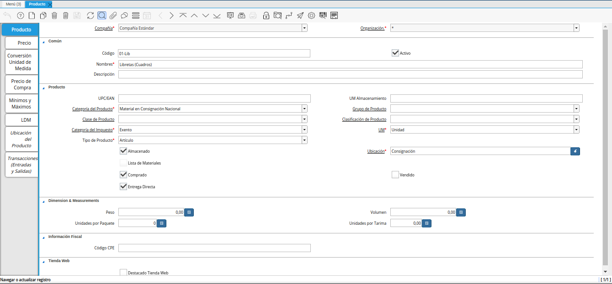
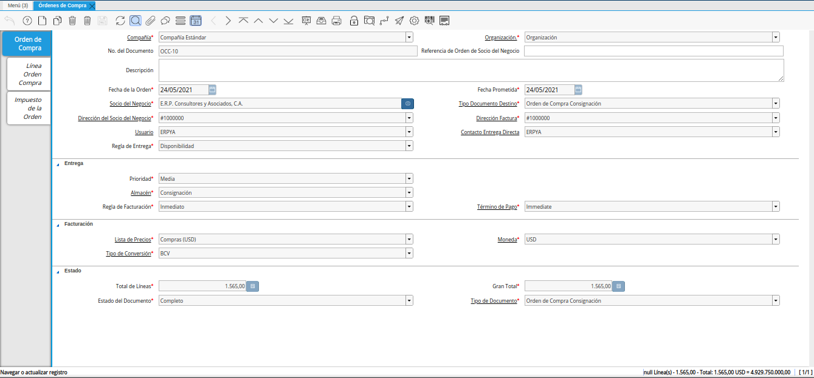

Configuración de Ventas en Consignación
Para gestionar o relacionar las ventas en consignación, ERPyA realizó la modificaciones correspondientes al procedimiento de las ventas en consignación, con la finalidad de mejorar y agilizar el proceso para el usuario.
Luego de las modificaciones realizadas, no es obligatorio tildar el check “Entrega Directa” en el registro del socio de negocio proveedor al cual se requiere relacionar las ventas. Dicho registro se puede realizar de manera regular.
Note
El registro del socio del negocio proveedor se encuentra explicado de manera detallada en el material Registro de Proveedor, elaborado por ERPyA.
En base a lo expuesto anteriormente, se debe cumplir con las siguientes configuraciones para gestionar de manera correcta el proceso de ventas en consignación.
El producto de la orden de compra, debe tener tildado obligatoriamente el check “Entrega Directa”.
Note
El registro del producto se encuentra explicado de manera detallada en el material Registro de Producto, elaborado por ERPyA.

Imagen 1. Producto
La configuración de los tipos de documentos involucrados en el proceso, es importante para definir el comportamiento de los mismos. Por ello, se tienen los tipos de documentos “Orden de Compra Consignación” e “Inventario de Uso Interno Consignación”, previamente configurados para el procedimiento de ventas en consignación, los mismos tienen tildado el check “Entrega Directa”.
Note
Al tildar el check en la configuración del tipo de documento, se indica que el mismo corresponde al proceso de consignación. Dicha configuración es realizada únicamente por los consultores de ERPyA.
La orden de compra debe tener tildado obligatoriamente el check “Entrega Directa”, estar realizada bajo el tipo de documento “Orden de Compra Consignación” y estar en estado “Completo”.
Note
El registro de la orden de compra para el proceso de consignación, se encuentra explicado de manera detallada en el material Registro de Orden de Compra Directa, elaborado por ERPyA.

Imagen 2. Orden de Compra
Luego de verificar la configuración de ventas en consiganción, se puede proceder a realizar el procedimiento explicado en el material Relación de Ventas en Consignación, elaborado por ERPyA.